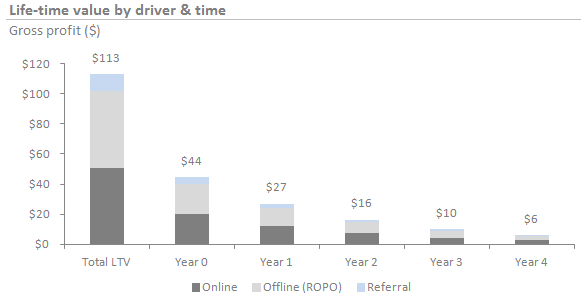

This calculation is currency independent, but feel free to to change the symbol here.
| Product Conversion | |
|---|---|
AdWords CPC  Your Cost-per-Click average in last 30 days - The amount that you actually pay each time someone clicks your ad. You can find it in AdWords. |
$ |
| Conversion rate Your conversion rate average in % in last 30 days - How often a click on your ad resulted in a conversion, a meaningful action like a sale, lead, or sign-up. You can find it in AdWords. |
|
| Purchase Profitability | |
|---|---|
| Customer lifetime (in periods) Periods – the units of time into which a customer relationship is divided for analysis. A year is the most commonly used period - Customer Life-Time value is a multi-period calculation, usually stretching 3–7 years into the future. In practice, analysis beyond this point is viewed as too speculative to be reliable. | |
| Your customers' first purchase value The first time purchase value of your customer - The average amount of money your customer spends for the first time. |
$ |
| Referral rate The % rate in which customers continue to recommend or talk about their good experiences with their friends - If your referral rate is 10% it means that for every 10 customers there is 1 more customer from the recommendations. | |
| Gross profit margin The % proportion of money left over from revenues after accounting for cost of goods sold. Gross profit margin serves as the source for paying additional expenses and future savings. | |
| Online-to-Store (O2S) | |
|---|---|
| O2S category | |
| Destination country | |
| Online-to-Store (O2S) factor O2S factor represents the coefficient by which you should multiply your online revenue to be able to incorporate also the part of offline sales which were influenced by online and thus be able to calculate the whole ROI of your digital marketing activities. O2S factor = 1 means you have no offline sales. | |
| Discount rate | |
|---|---|
| Discount rate The % rate of return that capital could be expected to earn in an alternative investment of equivalent risk (also known as Cost of capital). It helps you in discounting the future revenues to the present value. | |
Based on the life-time value of acquisition, your break-even CPC is $2.87.
| $ 115 | ||||||
| $84 | $31 | |||||
| Customer Life-Time Value Customer Life-Time Value represents present value of your customer considering your customer lifetime, referral rate as well as O2S effect in your industry. |
CPA | Profit per Customer |
With current CPC of $2.10 the return-on-investment of your online campaign is 36%.
What next?
- Share current setup by copying this link:
- Learn about the methodology ▼
Methodology
Note: Some content below mirrors the Wikipedia article on Customer lifetime value.
Customer lifetime value has intuitive appeal as a marketing concept, because in theory it represents exactly how much each customer is worth in monetary terms, and therefore exactly how much a marketing department should be willing to spend to acquire each customer, especially in direct response marketing.
Lifetime value is typically used to judge the appropriateness of the costs of acquisition of a customer. For example, if a new customer costs $50 to acquire (COCA, or cost of customer acquisition), and their lifetime value is $100, then the customer is judged to be profitable, and acquisition of additional similar customers is acceptable.
Advantages of CLV:
- management of customer relationship as an asset
- monitoring the impact of management strategies and marketing investments on the value of customer assets
- determination of the optimal level of investments in marketing and sales activities
- implementation of sensitivity analysis in order to determinate getting impact by spending extra money on each customer[3]
- optimal allocation of limited resources for ongoing marketing activities in order to achieve a maximum return
- a good basis for selecting customers and for decision making regarding customer specific communication strategies
- measurement of customer loyalty (proportion of purchase, probability of purchase and repurchase, purchase frequency and sequence etc.)[4]
Inputs
- Churn rate, the percentage of customers who end their relationship with a company in a given period. One minus the churn rate is the retention rate. Most models can be written using either churn rate or retention rate. This model uses only one retention rate under the assumption that the retention rate is constant across the life of the customer relationship. This model is based on assumption that retention rate grows hand in hand with the length of customer lifetime - model uses proxy that that one`s retention rate equals (# of periods of lifetime - 1) / # of periods of lifetime.
- Discount rate, the cost of capital used to discount future revenue from a customer. Discounting is an advanced topic that is frequently ignored in customer lifetime value calculations. Recommendation from valuation best practice would be to keep the discount rate at no more than ~10%.
- Gross profit margin, % proportion of money left over from revenues after accounting for the cost of goods sold. Gross profit margin serves as the source for paying additional expenses and future savings. This CLV model is based for simplicity on gross profit margin, however if one can estimate the full net profit expected from the customer, it can via setting the % accordingly.
- Period, the unit of time into which a customer relationship is divided for analysis. A year is the most commonly used period. Customer lifetime value is a multi-period calculation, usually stretching 3–7 years into the future. In practice, analysis beyond this point is viewed as too speculative to be reliable. The number of periods used in the calculation is sometimes referred to as the model horizon.
- Online-to-Store factor, represents the coefficient by which one should multiply his online revenue to be able to incorporate also the part of offline sales which were influenced by online and thus be able to calculate the full ROI of your digital marketing activities. O2S factor = 1 means you have no offline sales.
Model

where "First Purchase * O2S factor" represents yearly gross contribution per customer, "r" is the yearly retention rate based on assumption that retention rate grows hand in hand with the length of customer lifetime - model uses proxy that that one`s retention rate equals (# of periods of lifetime - 1) / # of periods of lifetime, "i" is the yearly discount rate.
Example
Let's consider the model example - First Purchase of $100, Customer Lifetime of 3 years (thus retention rate of (3-1)/3 = 67%), referral rate of 10% (meaning that for every 10th customer there is 1 more from the recommendation), Gross profit margin of 20% and discount rate of 10% p.a. Chart that would visualize gross contribution of the customer in this example would be following:
Misuses and downsides
NPV vs. Nominal predictions
The most accurate CLV predictions are made using the net present value (NPV) of each future net profit source, so that the revenue to be received from the customer in the future is recognized at the future value of money. This CLV model is based on NPV of each future net profit source, for discounting to present values is used discount rate (in common usage is currently ~10%).
Net Profit vs Revenue
A common mistake is for a CLV prediction to calculate the total revenue or even gross margin associated with a customer. However, this can cause CLV to be multiples of their actual value, and instead need to be calculated as the full net profit expected from the customer. This CLV model is based for simplicity on gross profit margin, however if one can estimate the full net profit expected from the customer, it can via setting the % accordingly.
Segment Inaccuracy
Opponents often cite the inaccuracy of a CLV prediction to argue they should not be used to drive significant business decisions. For example, major drivers to the value of a customer such as the nature of the relationship are often not available as appropriately structured data and thus not included in the formula.
Comparison with Intuition
More, predictors such as specific demographics of a customer group may have an effect that is intuitively obvious to an experienced marketer, but are often omitted from CLV predictions and thus cause inaccuracies in certain customer segments.
External links
- custora.com/home/customer_lifetime_value
- Free customer lifetime value calculator
- kaushik.net/avinash/analytics-tip-calculate-ltv-customer-lifetime-value/
- ariegoldshlager.posterous.com/recommend-reading-customer-lifetime-value-pot
- quora: How-do-you-calculate-Customer-Lifetime-Value